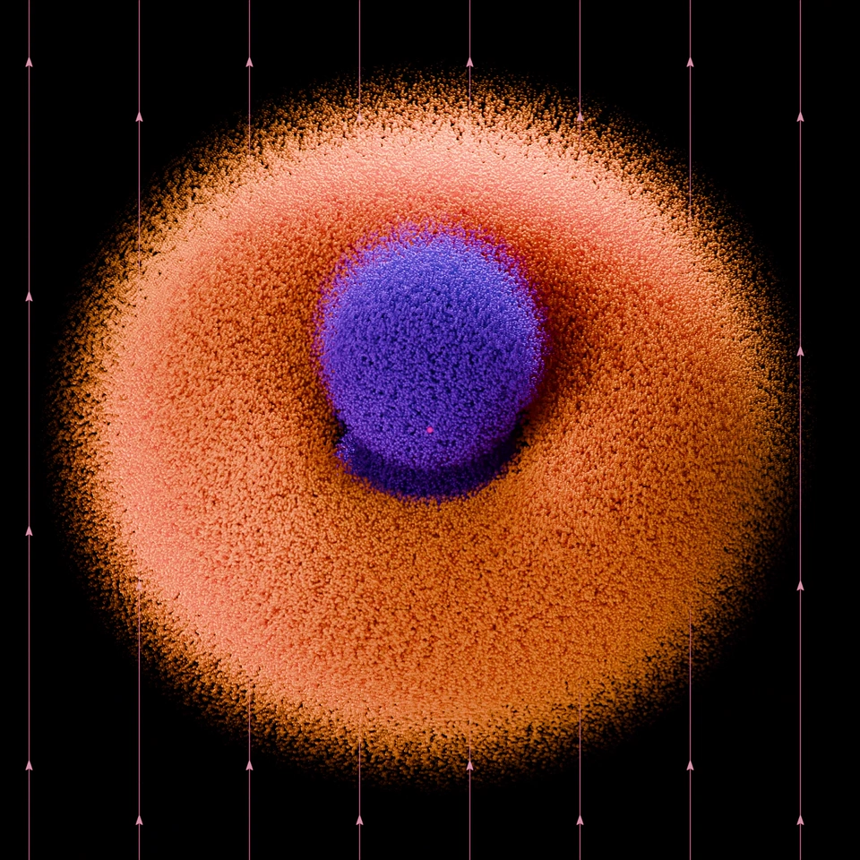
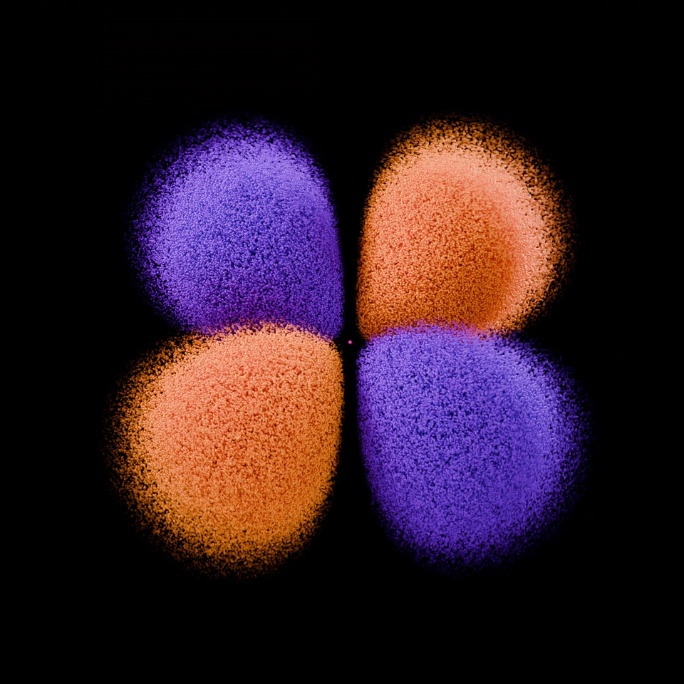
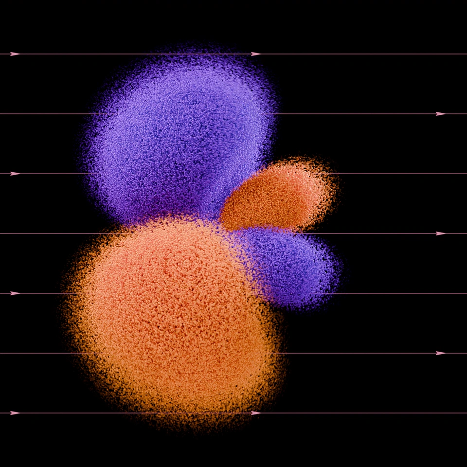

Hydrogen · Probability current
The Stark effect
reshaping an orbital
An electric field changes an atom’s energies. It can also reorganize the orbital’s lobes. Hydrogen gives us a particularly clear view of why.
Compare the two 2s branches
In the first orbital post, I used moving dots to show probability current inside hydrogen. The Zeeman post added a magnetic field. Here the field is electric, and some of the shapes change substantially.
The Stark effect is the shift and splitting of atomic energy levels in an electric field. It is usually introduced through those energies, or the spectral lines they produce. This post (and the Youtube video) shows how the orbitals change in shape. They also venture do demonstrate how the probability current changes mathematically.
01 / Superposition
A small energy change can accompany a large shape change
In the simplest hydrogen model, 2s and the three 2p states have exactly the same energy. This equality is called degeneracy. A superposition of them therefore costs no extra energy before the field is applied.
With the electric field along z, 2s couples to 2pz. The stationary combinations are an equal sum and an equal difference. One has lower energy and the other higher energy. Their densities are mirror images. [1]
We add the wavefunctions before calculating the density. Their amplitudes reinforce each other in some places and cancel in others. The cross term changes the lobes much more than simply adding a spherical cloud to a two-lobed cloud would suggest.
Higher energy\((2s-2p_z)/\sqrt2\)
Lower energy\((2s+2p_z)/\sqrt2\)
Because the unperturbed energies coincide, even a weak field can distinguish combinations with very different shapes.
The 1s orbital also polarizes. Its possible partners have different energies, however, so their contributions are small when the electric interaction is small compared with those energy gaps. Its density changes at first order in the field, while its energy shift begins at second order. [3]
The 2s–2p calculation, and what a field ramp actually does
Write the field as \(\mathbf E=\mathcal E\,\hat{\mathbf z}\), with \(e>0\) the magnitude of the electron charge. The electric interaction is \(H'=e\mathcal E z\). In the basis \((|2s\rangle,|2p_z\rangle)\),
Here \(a_0\) is the Bohr radius. With 2s positive at the origin and 2pz positive on the positive z axis, \(\langle2s|z|2p_z\rangle=-3a_0\). Thus
The sign written between basis states depends on their phase convention; the two energies and densities do not. The density contains the interference term
A pure 2s state contains both branches equally. In this exactly degenerate two-state model, a field ramp only changes their relative phase. Removing the common energy phase gives
The density then oscillates between s-like and p-like forms. Slowing that ramp does not select one branch. Preparing a chosen stationary branch requires something beyond this ramp, which is why the morph in these films is labelled illustrative.
02 / Direction
The field needs a state it can couple to
An electric field still exerts a force on the electron. But the large rearrangement above depends on having a suitable state at the same energy. The direction of the field determines which connections are available.
Take a fixed 3dxy orbital. A field along x couples it to 3py, allowing a large change of shape within the n = 3 family. A field along z has no such partner in that family. The large first-order rearrangement is absent in that direction. Weaker polarization through other energy levels remains possible. [2]
Initial 3dxy


Lower branch · field along x


Why 3dxy responds differently along x and z
With z as the quantization axis, the z operator connects states satisfying
The real 3dxy orbital is a combination of \(m_z=+2\) and \(-2\). A p orbital cannot have \(|m_z|=2\), and the n = 3 family contains no f orbital. There is therefore no first-order mixing partner in that family for a z-directed field.
Along x, the angular dependence is different. Direct evaluation gives
The equal sum and difference are then stationary branches of the projected n = 3 Hamiltonian, with linear shifts \(\mp\frac92ea_0\mathcal E\). These statements concern the leading, same-n model; they do not exclude coupling to other principal energy levels.
03 / A different combination
A deformed cloud with no linear energy shift
The n = 3 family offers more possibilities. The state below combines 3s and 3dz². Its probability redistributes into a different set of lobes and nodal surfaces, yet its linear Stark shift is zero.
At this order the density remains symmetric under z → −z. Shape change need not mean that the entire cloud moves to one side.
The balanced state and its zero shift
Within the \(n=3,m_z=0\) subspace, the field couples 3s to 3pz, and 3pz to 3dz². In that ordered basis,
The combination
is a zero eigenvector of this matrix. The two contributions to its coupling with 3pz cancel. Both terms are even under inversion, so \(\langle z\rangle=0\) in this approximation. Higher-order coupling to other n levels produces smaller corrections to the shape and energy.
As with the 2s films, this selects one possible Stark branch. It does not assert that a pure 3s state follows this branch under the field ramp alone.
04 / Probability current
The lobes settle. The current keeps circulating.
A stationary density can carry a nonzero probability current. Probability flows without accumulating anywhere. The dots show this flow using \(\mathbf v=\mathbf j/\rho\), where \(\rho\) is the probability density and \(\mathbf j\) its current.
For an electron, the current contains a phase contribution and a spin contribution. The spatial wavefunctions used in the examples on this page are real in the stationary holds. Their phase contribution vanishes, but the spin contribution remains. [4]
With uniform spin along +z, that current runs along contours of the density in horizontal planes. In the balanced 3s state above, axial symmetry makes those contours circles. When the density has a different symmetry, the paths can bend around lobes and become noncircular. Changing the orbital shape changes the geometry of its current as well.
The current used in these visualizations
For a Pauli spinor \(\Psi\), with no magnetic vector potential, the current obtained from the nonrelativistic limit of Dirac theory is
Here \(\boldsymbol\sigma\) denotes the Pauli matrices. For a spatially uniform spin polarization \(\hat{\mathbf n}\), the second term simplifies to
It is perpendicular to both the density gradient and the spin direction. Its divergence vanishes identically. The continuity equation,
therefore allows this circulation while the density stays fixed.
The approximation behind the pictures
These are leading Stark states of hydrogen, calculated by mixing states within one principal energy level. Real hydrogen has fine structure and smaller splittings. The degenerate model is appropriate when the electric coupling dominates those splittings while remaining small compared with the spacing between principal levels. It should not be extrapolated to arbitrarily tiny or arbitrarily large fields. [3]
The films omit coupling between different n levels, relativistic corrections and field ionization. At finite static field, excited Stark states are more accurately resonances with finite lifetimes. The pictures describe their leading bound-like shapes. The 1s discussion above explains a response outside the same-n approximation.
Time is slowed for readability. Lighting, bead size and the bright nucleus marker are visual choices; brightness is not a calibrated probability scale.
Further reading
- UC San Diego, The Stark Effect for n = 2 States. The degenerate calculation and its two split branches.
- University of Illinois, Hydrogen atom in an electric field. Dipole selection rules and the linear Stark effect.
- James K. Freericks, Georgetown University, Graduate Quantum Mechanics II, lecture 19. The ground-state response and the role of fine structure in choosing the appropriate regime.
- Marek Nowakowski, The Quantum Mechanical Current of the Pauli Equation, American Journal of Physics 67, 916–919 (1999). The phase and spin terms in the probability current.
Comments and questions
Share a thought about this visualization.